17 Topic Modeling and Sentiment Analysis of Social Media Networks
A common challenge we face during analysis is our ability to efficiently and effectively organize, sort, structure, and analyze a collection of documents that contain pertinent information in the form of text, such as news sites, blogs, tweets, YouTube comments, etc. Typically, we examine websites manually (e.g., looking up Twitter accounts of interest) and conduct keyword searches (e.g., databases or Google) to identify sources of information on which we need to allocate our limited time and resources.
Given the amount of information that we have to sift through during a typical analytic cycle, however, we cannot rely solely on manual methods to understand sentiment and central topics embedded within documents, let alone a large set of documents. Furthermore, we risk focusing too much on specific documents and ignoring other potentially relevant texts by relying our “best guess” as to which sources are most relevant to our topic at hand.
This lab serves as an introduction to two examples of natural language processing (NLP) for analyzing social media data: namely, sentiment analysis and topic modeling. The former, often used synonymously with opinion mining (though they are not the same thing), is a broad set of approaches to identify sentiments expressed in a body of text, such as a large collection of tweets.While several approaches exist, two commonly used sentiment analysis are machine learning (ML) (supervised and unsupervised) and lexicon-based techniques. While ML and hybrid ML-lexicon approaches offer many advantages, this lab introduces you to a lexicon-based approach for identifying sentiment in Twitter data.
As several researchers have explained (e.g., Giachanou and Crestani (2016)), Twitter data poses unique challenges for sentiment analysis. For instance, tweets are short by nature (the 140 characters could be of an issue for ML approaches); samples and underlying sentiment may not be representative of a target population (e.g., younger individuals use Twitter more often than older people); we often do not know “where” or from whom data originates; users often use emoticons, emojis, and incorrect English; many samples contain multi-lingual text, which often forces analysts to “throw away” data depending on their approach; and samples regularly contain multiple topics for which users have sentiment. The data set we use here, which is a sample of tweets containing #QAnon in early-August 2020, is no exception. Not everyone who has tweeted #QAnon is a “believer” and the movement incorporates a variety of topics for which users may express sentiment.
Topic modeling is another useful approach for understanding large bodies of text. It is form of statistical modeling for discovering hidden topics and themes that occur in a collection of documents, as well as for classifying documents based on those themes. Because we do not have time to read and/or hand-code themes within large collections of text, we need statistical algorithms to analyze the words in the texts and to uncover the structure of topics within the set of documents and within individual documents themselves.
Here we cover latent dirichlet allocation (LDA), which is a commonly used form of topic modeling. This form of modeling makes two basic assumptions (Silge and Robinson, 2017):
Every document is a mixture of topics. Let’s use an oversimplified example for demonstration purposes. If we tell an LDA model to identify two prominent topics in two extremely active Twitter accounts (i.e., two documents), we might find that Twitter Account A is 90% topic A (e.g., music) and 10% topic B (e.g., sports) while Twitter Account B is 50% topic A (e.g., music) and 50% topic B (e.g., sports). Every topic is a mixture of words. Using the same Twitter accounts, we could imagine common words embedded in the tweets for the music topic might be “hip-hop,” “rock,” “pop,” “Michael Jackson,” “Led Zeppelin,” and “Tupac,” whereas the most relevant words for sports might be “basketball,” “football,” “athlete,” “run,” and “swim.”
As with Lab 9, we adapted much of this lab from the excellent reference, Text Mining with R: A Tidy Approach (2017) (https://www.tidytextmining.com/).
17.1 Data and Setup
Place a header at the top of your script that tells you what you called it, what it accomplishes, etc.
########################################################################
# What: Topic Modeling and Sentiment Analysis of Social Media Networks
# File: Lab10_Data_QSamp.RData
# Created: 02.28.19
# Revised: 03.03.22
########################################################################17.1.1 Load Libraries
After you set your working directory, go ahead and load the following packages for this lab. You should be familiar with most of these by now.
library(dplyr)
library(tidytext)
library(lubridate)#Good for working with temporal data, which contains dates.
library(ggplot2)
library(igraph)
library(rtweet)# For functions like "round_time"
library(textdata)
library(purrr)
library(topicmodels)# Used for LDA.
library(ldatuning)# This will help us identify how many topics we want to ask for in the LDA section.
library(readr)# Helps us export our data into csv.
library(stringr)As with the previous lab, set your global options so that strings are NOT considered as factors.
17.1.2 Data
As briefly mentioned above, the data set we will use here is similar to what we examined in the previous lab. Specifically, this data set contains only a 9 of the original 90 columns and is limited to tweets in the English language. We have pre-processed the text already for you (e.g., removed stop words and converted text to lower case). We will “tokenize” our data shortly. If you want practice, please feel free to work through the process on Lab 9’s data set.
Once you run the next chunk of code, note the last few columns contained in our data: “hubs,” “auth,” and “community.” The first two reflect each user’s hubs and authority scores for a combined replies, quotes, mentions, and retweets network among the “English” speaking users. Hence, the data are directed for these statistics and this is not an igraph object, but rather the results from running statistics on one.
It also contains the “louvain” community to which each user belongs. There are 739 louvain communities and the network appears rather modular (.82) even though it was too large to visualize efficiently.
[1] "user_id" "status_id" "screen_name" "created_at" "text"
[6] "lang" "hubs" "auth" "community" As we’ve discussed in class, you have to consider at least two important issues when conducting sentiment analysis using a lexicon-based approach: choice of lexicon dictionary and unit of analysis. The former is important because dictionaries are often built for a specific context. In this case, we will use the AFINN sentiment lexicon, which is a list of English terms rated by Finn Arup Nielsen with values between -5 (negative) and +5 (positive) (http://www2.imm.dtu.dk/pubdb/pubs/6010-full.html). Like other lexicons, not all words, especially neutral ones, are included in the dictionary.
It is not the only dictionary option that is available using the get_sentiments() function, but it is useful because it is built specifically for microblogs, of which Twitter is a form. You can see, for example, that the term “abandon” is given a value of -2.
# A tibble: 6 x 2
word value
<chr> <dbl>
1 abandon -2
2 abandoned -2
3 abandons -2
4 abducted -2
5 abduction -2
6 abductions -2The second important consideration is our unit of analysis. Commonly used units for sentiment analysis are the document, sentence, or entity. Thus, we might be using a lexicon based on words, but we’re identifying sentiment for different units of analysis. Because networks are multi-level in nature, we will examine sentiment based on the entire network, specific communities (i.e., louvain subgroups), and central user accounts (e.g., “hubs”). However, we will stick with the community-level for LDA to identify topics underlying narratives within each cluster.
17.2 Sentiment Analysis (Multiple Network Levels)
17.2.1 Sentiment for Overall Network
Let’s begin by looking at the overall sentiment in the network. First, we need to use the unnest() function to parse out individual words from our data set’s “text” column.
text_words <- QA_df %>%
unnest_tokens(word, text)
head(text_words[3:9])#Here we are looking at the last seven columns. screen_name created_at lang hubs auth community word
1 S223S223 2020-08-01 17:32:48 en 0 0 163 qanon
2 S223S223 2020-08-01 17:32:48 en 0 0 163 reverse
3 S223S223 2020-08-01 17:32:48 en 0 0 163 spell
4 S223S223 2020-08-01 17:32:48 en 0 0 163 qanon
5 S223S223 2020-08-01 17:32:48 en 0 0 163 thegreatawakening
6 Shaddilay 2020-08-01 17:32:25 en 0 0 190 wowLet’s explore the overall score a few different ways, such as the distribution of sentiment values (-5 to 5), average word sentiment across all tweets, and some extreme values/terms.
Run the code below to obtain the distribution of sentiment values. For instance, only 34 words are extremely negative (-5) and 23 are extremely positive (+5).
count_sent <- text_words %>%
inner_join(get_sentiments("afinn"), by = "word") %>%
count(value)
count_sent value n
1 -5 34
2 -4 3422
3 -3 16016
4 -2 11794
5 -1 6682
6 1 14109
7 2 23272
8 3 5439
9 4 1361
10 5 23It’s more useful to observe the distribution visually. Let’s go ahead and plot the distribution with a histogram.
count_sent %>%
ggplot(aes(x = value, y = n)) +
geom_col(show.legend = F) +
xlab(NULL) +
labs(y = "Count",
x = "Sentiment Value",
title = "#QAnon Conversation (AUG 1-7)",
subtitle = "English Tweets - AFINN")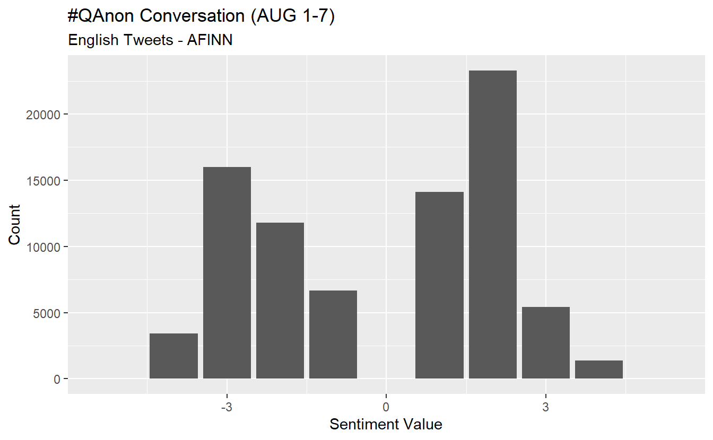
While the average may not be super illuminating, we can calculate it using the following code. The inner_join() function applies the “afinn” dictionary to our data frame and we use tally() and mean() to obtain our overall average. The average indicates the overall sentiment is negative but perhaps less so than one would expect from #QAnon.
net_sent <- text_words %>%#Average score across tweets.
inner_join(get_sentiments("afinn"), by = "word") %>%
tally(mean(value))
net_sent n
1 -0.1174287Averages are somewhat tricky because we have temporal data. Using the code below, we can obtain and visualize the daily average sentiment from 1-7 August (we modified code from https://github.com/mkearney/rstudioconf_tweets#explore). Negative values/sentiment (i.e., those below 0) are colored in red, while positive daily scores are blue.
text_words %>%
inner_join(get_sentiments("afinn"), by = "word") %>%
mutate(time = round_time(created_at, "days")) %>%
group_by(time) %>%
summarise(value = mean(value, na.rm = TRUE)) %>%
mutate(valence = ifelse(value > 0L, "Positive", "Negative")) %>%
ggplot(aes(x = time, y = value)) +
geom_smooth(method = "loess", span = .5,
colour = "purple") +
geom_point(aes(fill = valence, colour = valence),
shape = 21, alpha = .6, size = 3.5) +
theme_minimal(base_size = 15) +
theme(legend.position = "none",
axis.text = element_text(colour = "black"),
plot.title = element_text(size = rel(1), face = "bold"),
plot.subtitle = element_text(size = rel(.75)),
plot.caption = element_text(colour = "black")) +
scale_fill_manual(
values = c(Positive = "royalblue4", Negative = "red")) +
scale_colour_manual(
values = c(Positive = "#001155", Negative = "#550000")) +
labs(x = NULL, y = NULL,
title = "Sentiment #QAnon from 1-7 Aug",
subtitle = "Mean sentiment of tweets aggregated on daily intervals",
caption = "\nSource: Data gathered using rtweet. Sentiment analysis done using afinn lexicon")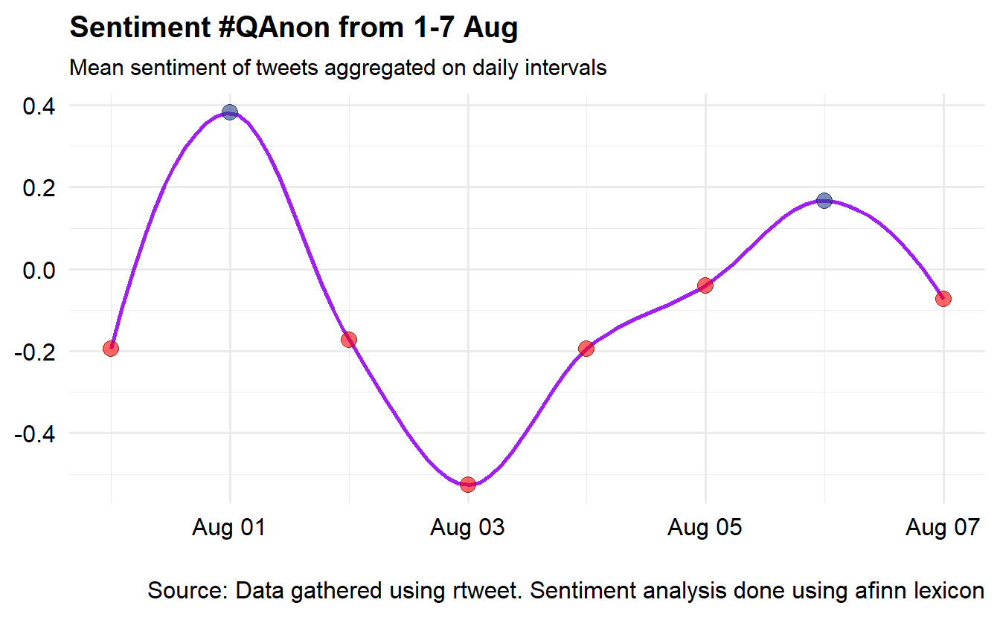
Now, let’s check out each term’s “contribution” to the overall sentiment, which is the product of a term’s sentiment according to the dictionary and the number of times it appears. For instance, the term “conspiracy” has a value of -3 and it appears 4,427 times in our data set, which means its contribution score is -13,281. We’ve included code to export code in case you want to examine more than a sample of terms.
contributions <- text_words %>%
inner_join(get_sentiments("afinn"), by = "word") %>%
group_by(word) %>%
summarize(occurences = n(),
contribution = sum(value))
readr::write_csv(contributions, "QAnon_Sentiment_Contributions.csv")As with our distribution of values, it can be more effective to visualize/plot the results. Unsurprisingly, we can see that “conspiracy” is a negative term that contributes substantially to the overall average.
contributions %>%
top_n(25, abs(contribution)) %>%
mutate(word = reorder(word, contribution)) %>%
ggplot(aes(word, contribution, fill = contribution > 0)) +
geom_col(show.legend = FALSE) +
coord_flip()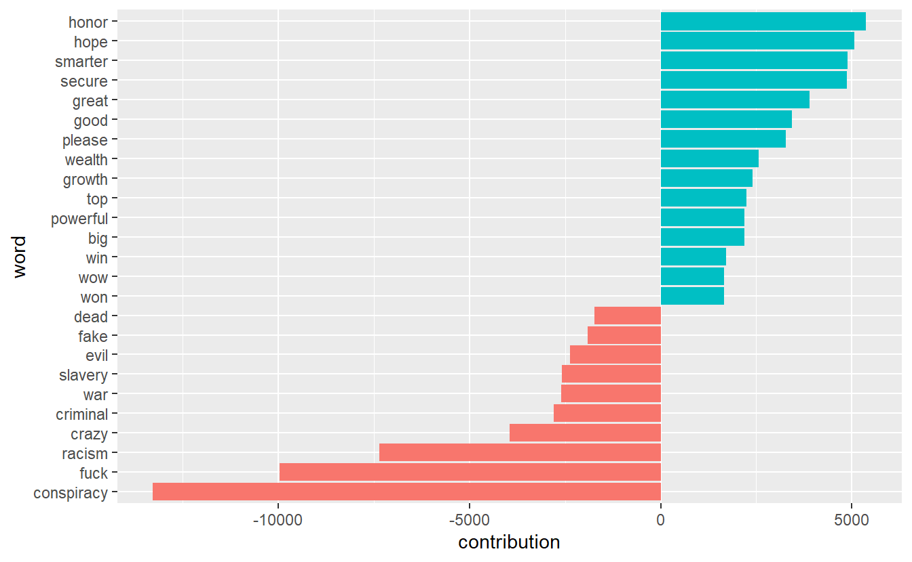
17.2.2 Sentiment for Individual Topics
While the Twitter conversation is about #QAnon, there are almost certainly subtopics that we can explore using sentiment analysis. One approach is to extract tweets about specific entities/topics about which there might an opinion for which we can assess sentiment, such as “Hollywood” and “deep state.” Such an approach may give us an idea about how Twitter users felt toward the two during that time and within the broader #QAnon conversation (which is actually just one hashtag about the movement).
Let’s begin by extracting all tweets that contain the terms “Hollywood” and “deepstate/deep state” and put them into their own data frames.
hollywood_df<-QA_df%>%
filter(str_detect(string = text, pattern = "hollywood"))
deepstate_df<-QA_df%>%
filter(str_detect(string = text, pattern = "deepstate | deep state"))Now we can run the same code for our two new data frames as we did above. We’ll do Hollywood and then deep state.
hollywood_sent <- hollywood_df %>%
unnest_tokens(word, text) %>%
inner_join(get_sentiments("afinn"), by = "word") %>%
count(value)
hollywood_sent %>%
ggplot(aes(x = value, y = n)) +
geom_col(show.legend = F) +
xlab(NULL) +
labs(y = "Count",
x = "Sentiment Value",
title = "Sentiment - Hollywood",
subtitle = "English Tweets - AFINN")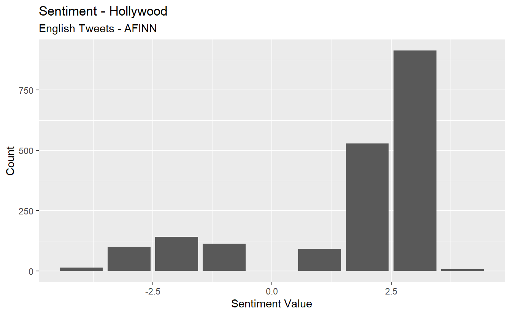
Now, let’s do deep state.
deepstate_sent <- deepstate_df %>%
unnest_tokens(word, text) %>%
inner_join(get_sentiments("afinn"), by = "word") %>%
count(value)
deepstate_sent %>%
ggplot(aes(x = value, y = n)) +
geom_col(show.legend = F) +
xlab(NULL) +
labs(y = "Count",
x = "Sentiment Value",
title = "Sentiment - Deep State",
subtitle = "English Tweets - AFINN")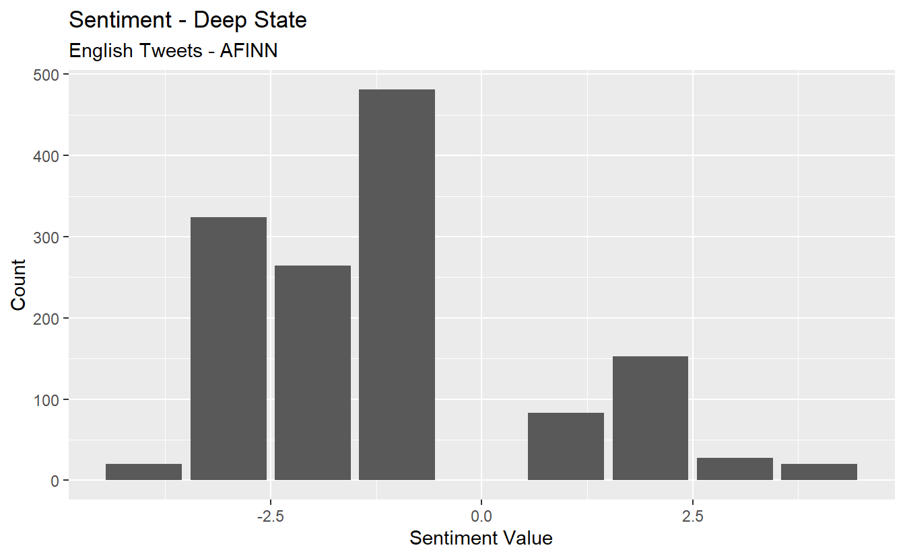
Now, calculate the average sentiment for each.
avg_hollywood_sent <- hollywood_df %>%#Average score across tweets.
unnest_tokens(word, text) %>%
inner_join(get_sentiments("afinn"), by = "word") %>%
tally(mean(value))
avg_hollywood_sent n
1 1.655154avg_deepstate_sent <- deepstate_df %>%#Average score across tweets.
unnest_tokens(word, text) %>%
inner_join(get_sentiments("afinn"), by = "word") %>%
tally(mean(value))
avg_deepstate_sent n
1 -1.098325Finally, take a look at word contributions for Hollywood and then deep state. What might this graph show about some limitations of sentiment analysis using a lexicon approach?
hollywood_df %>%
unnest_tokens(word, text) %>%
inner_join(get_sentiments("afinn"), by = "word") %>%
group_by(word) %>%
summarize(occurences = n(),
contribution = sum(value))%>%
top_n(25, abs(contribution)) %>%
mutate(word = reorder(word, contribution)) %>%
ggplot(aes(word, contribution, fill = contribution > 0)) +
geom_col(show.legend = FALSE) +
coord_flip()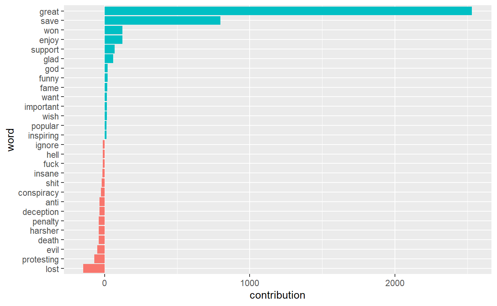
deepstate_df %>%
unnest_tokens(word, text) %>%
inner_join(get_sentiments("afinn"), by = "word") %>%
group_by(word) %>%
summarize(occurences = n(),
contribution = sum(value))%>%
top_n(25, abs(contribution)) %>%
mutate(word = reorder(word, contribution)) %>%
ggplot(aes(word, contribution, fill = contribution > 0)) +
geom_col(show.legend = FALSE) +
coord_flip()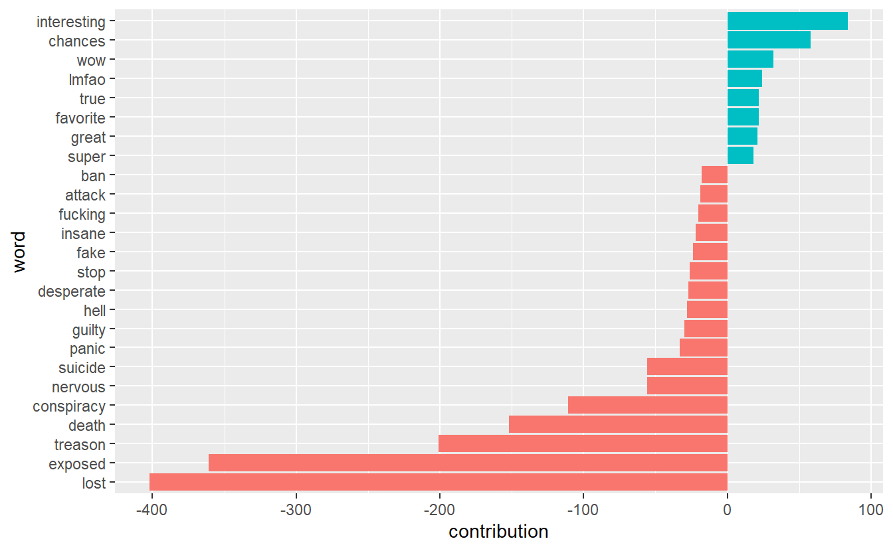
17.2.3 Subgroup Sentiment
Let’s turn to sentiment analysis based on communities. One question we can ask is, which communities were the most positive and negative overall? Because we have over 700 communities, we will limit ourselves to the 10 largest subgroups, all of which have over 1,000 members. Also, we will limit ourselves to overall sentiment per community rather than follow all the steps for sentiment for the overall network.
First, we need to extract tweets from users who are embedded in the 10 largest subgroups. You can use the first chunk of code to explore which communities have the most members. We can see that communities “190” and “194” have the most members (indicated by the “Freq” column).
groups_lv <- as.data.frame(table(QA_df$community))
top10 <- groups_lv %>%
top_n(10) %>%
arrange(desc(Freq))
top10 Var1 Freq
1 190 4846
2 194 3143
3 637 2823
4 490 2459
5 738 2382
6 723 1696
7 163 1500
8 410 1354
9 231 1039
10 726 1013Next, let’s filter all tweets from users in these subgroups.
main_grps <- QA_df%>%
filter(community %in% c("190",
"194",
"637",
"490",
"738",
"723",
"163",
"410",
"231",
"726"))
table(main_grps$community)# We'll use this to double-check our filter worked.
163 190 194 231 410 490 637 723 726 738
1500 4846 3143 1039 1354 2459 2823 1696 1013 2382 We need to assign a count of each word to each community. You can see that users in community “190” used the word “qanon” 5,300 times while accounts in subgroup “637” used it 3,714 times.
text_main_grps <- main_grps %>%
unnest_tokens(word, text) %>%
count(community, word, sort = TRUE) %>%
ungroup()
head(text_main_grps) community word n
1 190 qanon 5300
2 490 now 4773
3 637 qanon 3714
4 190 wwgwga 3705
5 194 qanon 3253
6 738 qanon 2860Now we can get the average sentiment for each community.
group_sent <- text_main_grps %>%
inner_join(get_sentiments("afinn"), by = "word") %>%
group_by(community) %>%
summarise(value = sum(value * n) / sum(n))
group_sent# A tibble: 10 x 2
community value
<dbl> <dbl>
1 163 0.450
2 190 0.277
3 194 -0.202
4 231 -0.0580
5 410 -0.642
6 490 -0.128
7 637 -0.469
8 723 -0.360
9 726 -0.100
10 738 -0.155 Go ahead and visualize the results like we did before. You can see that the largest subgroup (i.e., “190”) is the second most positive group during the time frame while cluster “410” is the most negative.
group_sent %>%
mutate(community = reorder(community, value)) %>%
ggplot(aes(community, value, fill = value > 0)) +
geom_col(show.legend = FALSE) +
coord_flip() +
ylab("Average sentiment value across communities")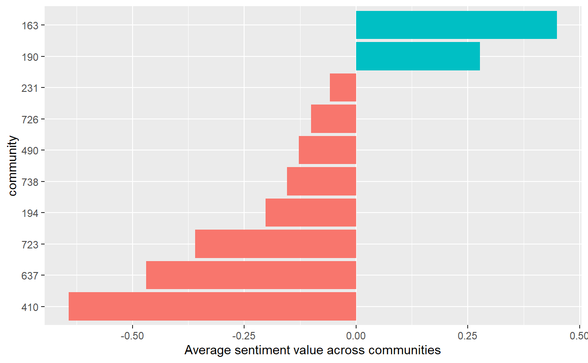
17.2.4 Key Actor Sentiment
Next, let’s explore the sentiment expressed by key actors. We could use this approach for any centrality measure, but here we will demonstrate it with “hubs.” Specifically, we will look at sentiment underlying tweets from the top 20 hubs, that is, tweets from those accounts with a hub centrality score >=1.26 (you can see this yourself in the data set but we’ll just tell you for demonstration purposes).
As with communities in the previous section, we need to assign a count of each word to each of our top 20 hubs. You can see that “IngaKaybor” used the word “trump” 102 times.
text_main_acts <- key_acts %>%
unnest_tokens(word, text) %>%
count(screen_name, word, sort = TRUE) %>%
ungroup()
head(text_main_acts) screen_name word n
1 IngaKaybor trump 102
2 GMiller06698349 trump 100
3 xenadog trump 98
4 michicaligirl trump 96
5 realmikes0017 trump 96
6 SomeGuyOnABoat trump 92Now we can get the average sentiment for each of our main hubs.
key_act_sent <- text_main_acts %>%
inner_join(get_sentiments("afinn"), by = "word") %>%
group_by(screen_name) %>%
summarise(value = sum(value * n) / sum(n))
head(key_act_sent)# A tibble: 6 x 2
screen_name value
<chr> <dbl>
1 augustine11535 -0.131
2 conserv2mysoul -0.266
3 dinmadness -0.293
4 ellimayradrep -0.325
5 GegeBebiii -0.160
6 GMiller06698349 -0.290Go ahead and visualize the results for the hubs. Only one of them has an average sentiment value that is positive (albeit barely positive).
key_act_sent %>%
mutate(screen_name = reorder(screen_name, value)) %>%
ggplot(aes(screen_name, value, fill = value > 0)) +
geom_col(show.legend = FALSE) +
coord_flip() +
ylab("Average sentiment value for key hubs")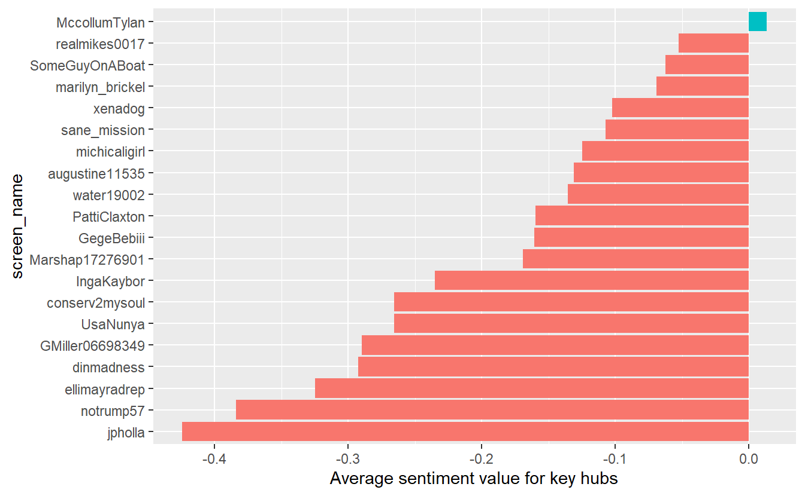
17.3 Topic Modeling (Community Level)
We will limit topic modeling to the community level for this exercise, which will give us an idea about underlying topics in Tweets among users within each community. While modeling the global structure and key actor-levels might be interesting, we will hold off on that now to keep things simple.
As we outlined at the beginning of the lab, LDA assumes every document is a mixture of topics and that every topic is a mixture of words. Thus, our first first step is to divide our data set into meaningful “documents,” which we will define here as communities. We’ve sort have done this already (see text_words data frame), but we’ll do it again to walk through the processes.
Again, we have to use the unnest function to parse out words so we can figure out which words appear within each community.
Next, we need to find document-word counts and then use tidytext's cast_dtm function to put our data frame into a document-term matrix. Again, this probably looks familiar because we’ve done this already for sentiment analysis, but we want to walk through the entire process again.
# A tibble: 6 x 3
community word n
<dbl> <chr> <int>
1 190 qanon 5300
2 490 now 4773
3 637 qanon 3714
4 190 wwgwga 3705
5 194 qanon 3253
6 738 qanon 2860Now use the cast_dtm function to convert the tibble to a document-term matrix.
Next, we need identify an appropriate number of topics, which is not a manual process. Because our data are in DTM format, we can choose from several available algorithms to guide us (http://www.rpubs.com/MNidhi/NumberoftopicsLDA). This step takes substantial time to complete, so save your workplace first and be patient (if you try this and your computer freezes, feel free to skip down to the next chunk of code (“perplexity”)). What we want are low scores for “CaoJuan2009” and “Arun2010” but high for “Griffiths2004.” According to “CaoJuan2009” and “Griffiths2004.” Ultimately, we want 48 topics.
my_topics <- FindTopicsNumber(lda_dtm, topics = seq(2:50),
metrics = c("Griffiths2004", "CaoJuan2009",
"Arun2010"),
method = "Gibbs",
verbose = FALSE)
FindTopicsNumber_plot(my_topics)
# Sometimes the graphs are difficult to see, so you can view the table instead.
# View(my_topics) 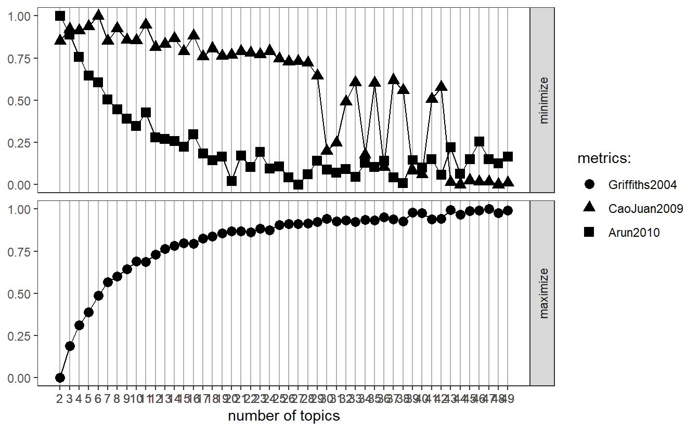
We need to run LDA before getting into perplexity to “confirm” how many topics we should select. It’s pretty straight forward. You’ll notice k represents how many topics we want.
A LDA_VEM topic model with 48 topics.Let’s now check out our perplexity results and see how a 48 topic model compares to other models with 10, 20, 30, 40, and 50 topics. Again, we want a low score. Again, this will take a long time, so be patient.
n_topics <- c(10, 20, 30, 40, 50)
my_lda_compare <- n_topics %>%
map(LDA, x = lda_dtm, control = list(seed = 1234))Go ahead and plot the results. While 50 topics may do a little better than 48, it looks like we’re in pretty good shape. For demonstration purposes, we will move forward with your 48 topic model but in the future you can re-run your models based on these results.
data_frame(k = n_topics,
perplex = map_dbl(my_lda_compare, perplexity)) %>%
ggplot(aes(k, perplex)) +
geom_point() +
geom_line() +
labs(title = "Evaluating LDA topic models",
subtitle = "Optimal number of topics (smaller is better)",
x = "Number of topics",
y = "Perplexity")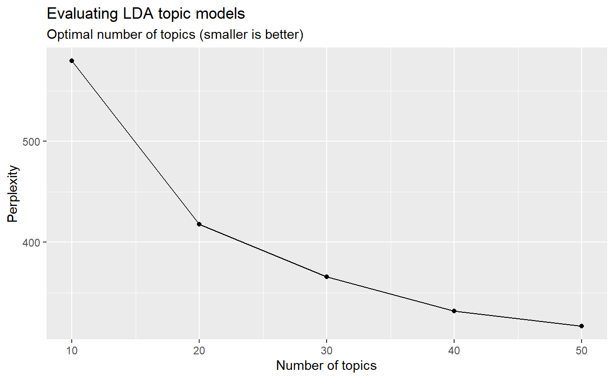
We can examine per-topic-per-word probabilities, which is what we get with beta. In other words, it computes the probability of that term being generated from that topic. For instance, the term “qanon” makes at least 5% of each of the topics (i.e., 1-6) seen here.
# A tibble: 6 x 3
topic term beta
<int> <chr> <dbl>
1 1 qanon 0.0519
2 2 qanon 0.0536
3 3 qanon 0.0804
4 4 qanon 0.0499
5 5 qanon 0.0555
6 6 qanon 0.0553Let’s use dplyr’s top_n function to find the top 10 terms within each topic. Here we can see, for example, that “movement” makes up about 1.5% of topic 1. As we’ve discussed, the topics are not named for you but rather you have to infer them from relevant terms.
top_terms_grps <- grps_topics %>%
group_by(topic) %>%
top_n(10, beta) %>%
ungroup() %>%
arrange(topic, -beta)
# You can view the data frame to check out the betas.
# View(top_terms_grps) We can plot the results as well; however, we have 48 topics, which would would produce very cluttered graphs. Let’s check out the betas for just a few of them (e.g., topics 1, 13, 18, 42).
Now, go ahead and plot.
sample_top %>%
mutate(term = reorder(term, beta)) %>%
ggplot(aes(term, beta, fill = factor(topic))) +
geom_col(show.legend = FALSE) +
facet_wrap(~ topic, scales = "free") +
coord_flip()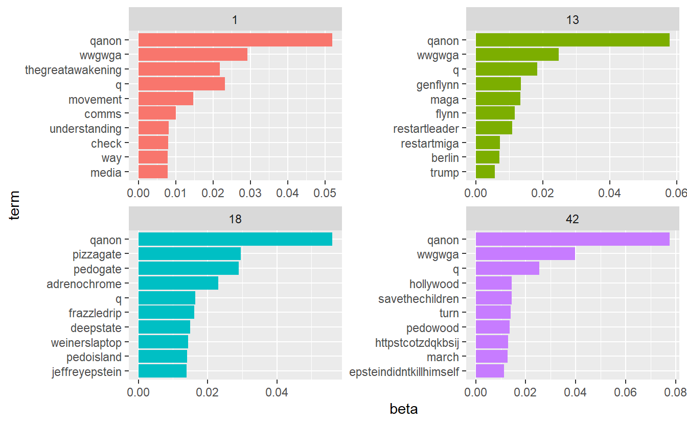
Remember, each document in this analysis represents a subgroup. Thus, we may want to know which topics are associated with each one. We can find this out by examining the per-document-per-topic probabilities (i.e.,gamma). As Silge and Robinson explain, “each of these values is an estimated proportion of words from that document that are generated from that topic.” For example, the model estimates that far less than 1% of of the words in community 615 were generated from topic 1.
# A tibble: 6 x 3
document topic gamma
<chr> <int> <dbl>
1 190 1 0.000000487
2 490 1 0.000000501
3 637 1 0.000000533
4 194 1 0.000000823
5 738 1 0.000000819
6 723 1 0.000000771Now that we have these topic probabilities, we can see how well our unsupervised learning did at distinguishing the subgroups. As we did before, let’s extract our 10 largest communities and check out the results. We’ll do this by five groups at a time to improve our visuals in the next step.
Plot the first five’s gamma outputs, which will tell us about topics within each community. For example, community 490 is %100 about topic 31, whereas 194, 637, 190, and 738 are defined by multiple topics.
main_grps_gamma1 %>%
mutate(document = reorder(document, gamma * topic)) %>%
ggplot(aes(factor(topic), gamma)) +
geom_boxplot() +
facet_wrap(~ document, nrow = 5, ncol = 1) +
theme_bw() +
labs(x = "Topic", y = "Gamma") +
theme(axis.text.x = element_text(angle = 90))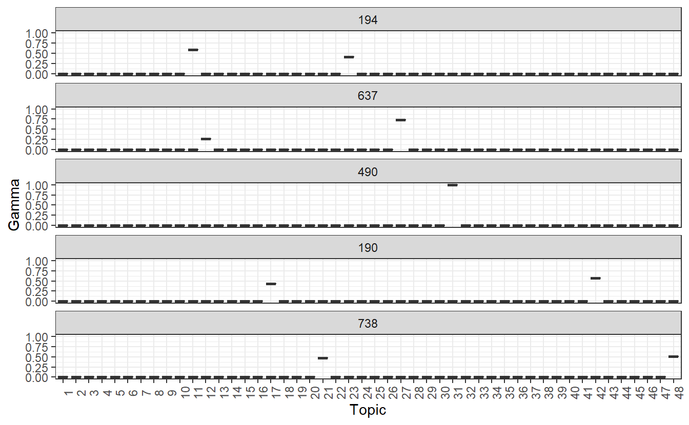
Now let’s plot the second set of community-based topics. We can see that subgroups 163, 723, and 410 are defined by a single topic, wheres communities 231 and 726 are defined by multiple topics. Again, we have to infer these by analyzing the beta outputs.
main_grps_gamma2 %>%
mutate(document = reorder(document, gamma * topic)) %>%
ggplot(aes(factor(topic), gamma)) +
geom_boxplot() +
facet_wrap(~ document, nrow = 5, ncol = 1) +
theme_bw() +
labs(x = "Topic", y = "Gamma") +
theme(axis.text.x = element_text(angle = 90))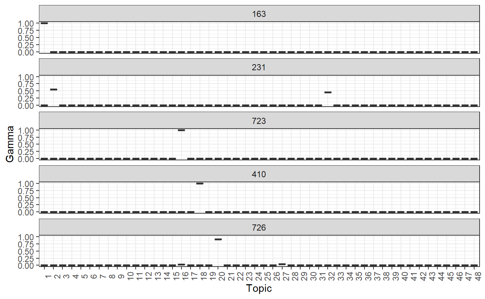
That’s all for now.